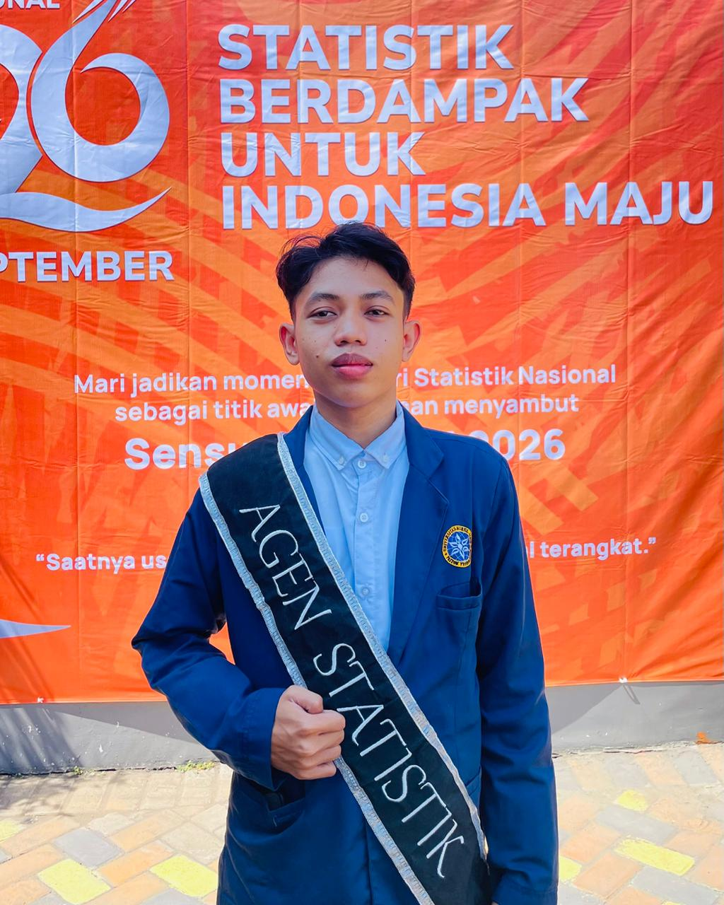

Tentang Saya



Saya adalah mahasiswa Teknik Informatika di Universitas Nurul Jadid yang berfokus pada integrasi teknologi informasi untuk efisiensi sistem kerja. Melalui keaktifan dalam berbagai kompetisi IT dan pelatihan profesional, saya terus mengasah kemampuan teknis dan pola pikir analitis guna menghadirkan solusi digital yang inovatif, relevan, dan adaptif terhadap kebutuhan industri.
Memiliki rekam jejak profesional dalam manajemen operasional dan keuangan sebagai Staff Tata Usaha serta Bendahara BOS. Saya terbiasa mengelola ekosistem administrasi digital, koordinasi sistem pemerintah (ARKAS/Dapodik), hingga penyusunan laporan keuangan yang akuntabel. Pengalaman ini membentuk karakter kerja saya yang sangat detail, disiplin, dan mampu bekerja di bawah standar akurasi yang tinggi.
Sebagai lulusan program Agen Statistik BPS Kabupaten Probolinggo, saya memiliki kompetensi dalam pengolahan data statistik dan diseminasi informasi. Saya mahir mentransformasikan data kompleks menjadi visualisasi infografis yang komunikatif untuk mendukung pengambilan keputusan berbasis data. Saya menjunjung tinggi integritas serta kerahasiaan data dalam setiap tanggung jawab profesional yang saya jalankan.